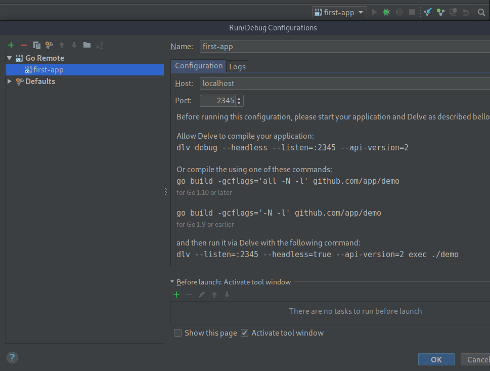
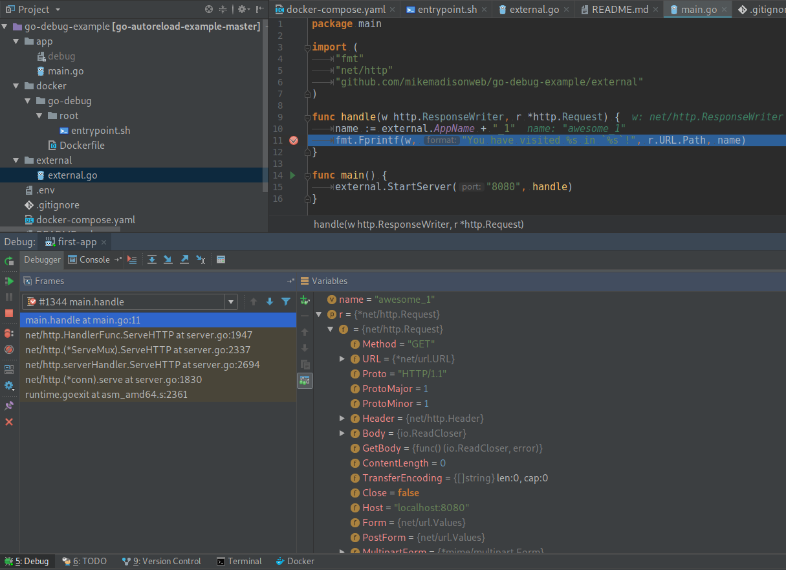

// todo(): How to debug Golang applications inside Docker containers using Delve
Suppose you have multiple Go microservices each one acting like a web server in our application architecture and you stuck with some subtle bug which drives you crazy. You might be also tired of putting variables of your interest inside formatted output of some sort of logger to see their current values. If you are looking for a better way of debugging Go code and you are not willing to give up using Docker, this article can help you.
All the code regarding this article can be found on GitHub so feel free to experiment with it.
Introduction
As the time running by more and more developers all over the world are turning into facilitating Docker to setup local environment on their computers. There are multiple reasons behind it:
- process isolation, configurable resource usage, and network restrictions
- fast setup and declarative configuration, which is self-describing for new team members
- repeatable setup on multiple development stages
- centralized version control for project dependencies
- large community if you need an advice
- Docker Hub registry if you are looking for Docker images that are open-source and ready to use
However, it’s not an article about Docker per se. I just mean that despite allowing a huge amount of advantages Docker also challenges us to find new ways of developing and debugging our applications. In previous article I have posted my Go auto-reload setup for development, this time I will reveal my way of debugging code inside Go containers. Rather then old-school console debuggers like GDB, I prefer using IDE integration with Delve which allows to see all the variables at once and to jump between stack frames or breakpoints easily. I will use JetBrains GoLand, but I think it can be used the same way with the most of other IDE and even with vim.
Building image
The easiest way of installing Delve debugger is to use go get command. After ensuring proper directory structure and adding needed dependencies to base Golang image debugger can be installed:1
2
3
4
5
6
7
8
9
10
11
12
13
14
15
16
17
18
19
20
21FROM golang:1.10-alpine
COPY root /
ENV GOPATH /go
ENV PATH $GOPATH/bin:/usr/local/go/bin:$PATH
RUN apk add --no-cache ca-certificates \
dpkg \
gcc \
git \
musl-dev \
&& mkdir -p "$GOPATH/src" "$GOPATH/bin" \
&& chmod -R 777 "$GOPATH" \
&& chmod +x /entrypoint.sh \
&& go get github.com/derekparker/delve/cmd/dlv
WORKDIR $GOPATH
ENTRYPOINT ["/entrypoint.sh"]
CMD ["dlv", "debug", "--headless", "--listen=:2345", "--api-version=2"]
I tried to make this Dockerfile reusable between different microservices. That’s why I added entrypoint.sh script to the image which changes the current directory before starting the container to the one that contains needed main.go file:1
2
3GO_WORK_DIR=${GO_WORK_DIR:-$GOPATH/src}
cd ${GO_WORK_DIR}
exec "$@"
So all that we need to do for using this image by multiple different applications is to pass GO_WORK_DIR environment variable to container upon creation. If you want to share the GO_PROJECT_DIR variable between team members you can add its value to .env file and push it to the repository.
Running Delve in headless mode means that only server part will be executed, with will listen for external connections on port 2345. Configuring container in docker-compose then will be trivial with one little exception, custom security option should be added in order for Delve to work inside the container:1
2
3
4
5
6
7
8
9
10
11
12
13
14version: '3'
services:
app:
container_name: "app"
build: "./docker/go-debug"
volumes:
- ".:${GO_PROJECT_DIR}"
environment:
GO_WORK_DIR: "${GO_PROJECT_DIR}/app"
ports:
- "8080:8080"
- "2345:2345"
security_opt:
- "seccomp:unconfined"
Any attempt to start a container without this option will face an error: could not launch process: fork/exec [...]: operation not permitted.
Now that we have our container up and running Delve is waiting for a connection. Let’s add configuration in GoLand to start a debugging session:

If you have tried any debugger before in any other IDE then everything else will look familiar to you. Debugging session can be started by hitting green bug button. If you place a breakpoint on a line with Go server initialization, execution will be immediately stopped on it. Otherwise, proceed to localhost:8080 to debug your request handling function:

That's all for today. Happy coding!